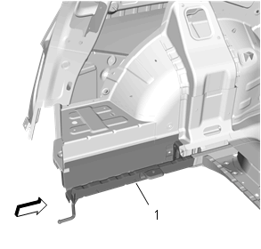
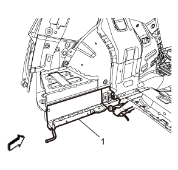
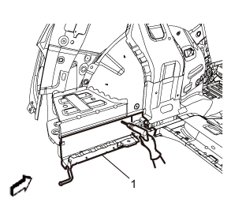
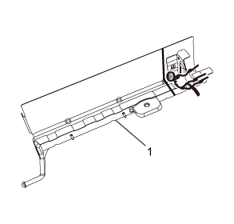
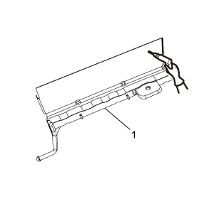

后纵梁的更换
拆卸程序
-
警告：参见有关碰撞维修许可设备的警告。注意:不按本程序操作将会损坏车辆结构的整体性。1.禁用辅助充气式约束系统。参见辅助充气式约束系统停用和启用。注意:所有打磨过的表面在安装前都需进行防腐处理。不进行防腐处理将导致钣金腐蚀加剧，降低碰撞中对乘客的保护。
- 2.断开蓄电池负极电缆。参见蓄电池负极电缆的断开和连接。
- 3.拆下所有相关板件和部件。
- 4.目视检查是否损坏。尽可能地修复损坏。
- 5.必要时除去维修部位的密封剂和防腐材料。参见防腐处理和修理。
- 6.拆卸后端板。参见后端板的更换。
-
7.在后纵梁 (1) 上作切割线。
-
8.在要剖切的部位切割后纵梁 (1)。注意:不得损坏任何其它板件或加强件。
-
9.查找并标记后纵梁 (1) 所有必要的原厂焊点。
- 10.钻出所有原厂焊点。记录焊点的数量和位置，以便安装维修总成。
-
11.拆卸损坏后纵梁 (1)。

安装程序
-
1.在相应位置切割后纵梁 (1)，使其与原板件的剩余部分相配合。修整剖切段接口，使剖切接缝处间隙为此处金属厚度的1/2倍。
- 2.利用维修件剩下的部分，制作50毫米（2英寸）的底板。
- 3.在原零件的剩余部分上沿剖切处钻8毫米（5/16英寸）的孔。使这些焊孔距离零件边缘13毫米（1/2英寸），彼此相隔40毫米（1½英寸）。
- 4.必要时预处理全部接合面。
- 5.在所有的结合面均涂板金烧焊防氧化剂或等同品。
- 6.将底板半插入剖切接缝内，夹紧并塞焊到车辆上。
- 7.对准后纵梁。
-
8.在原板件的标记位置，沿着后纵梁 (1) 边缘钻8毫米（5/16英寸）的塞焊孔。
- 9.清理并预处理连接表面，为焊接做好准备。
- 10.用三维测量或等效设备将后纵梁定位到车辆上并将后纵梁夹紧到位。
- 11.进行相应的塞焊。
- 12.安装所有相关板件和部件。
- 13.清理并预处理焊接表面。
- 14.必要时在维修部位涂抹密封剂和防腐材料。参见防腐处理和修理。
- 15.在维修部位涂上油漆。参见底漆/透明漆油漆系统。
- 16.连接蓄电池负极电缆。参见蓄电池负极电缆的断开和连接。
- 17.启用辅助充气式约束系统。参见辅助充气式约束系统停用和启用。